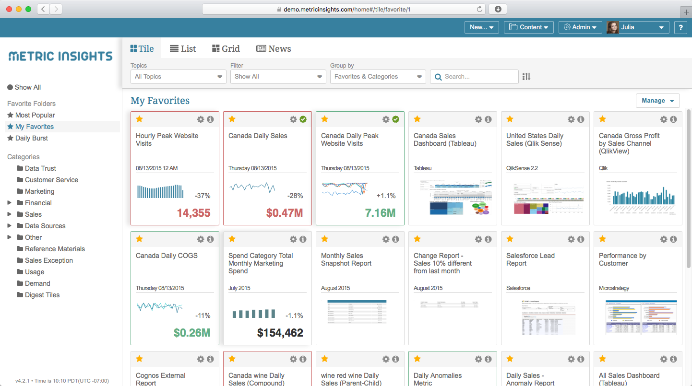
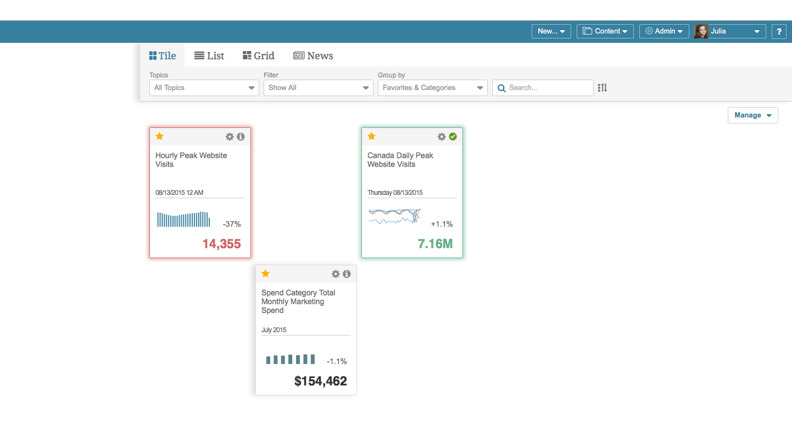
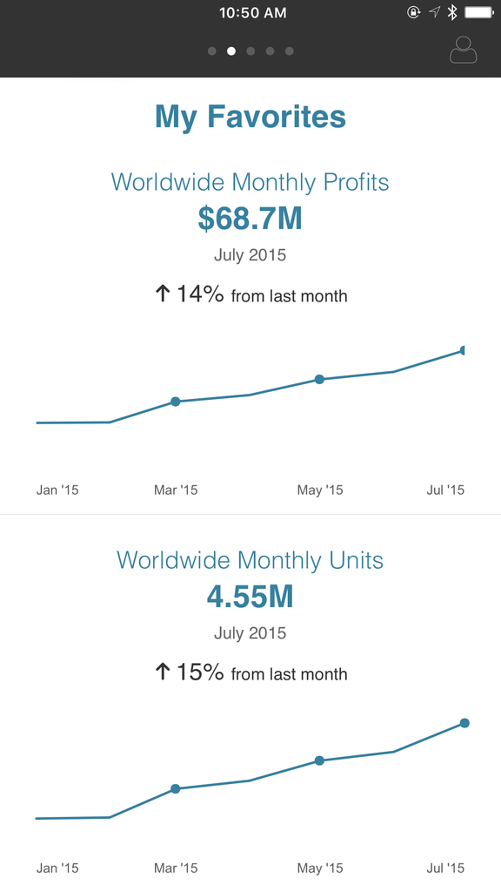
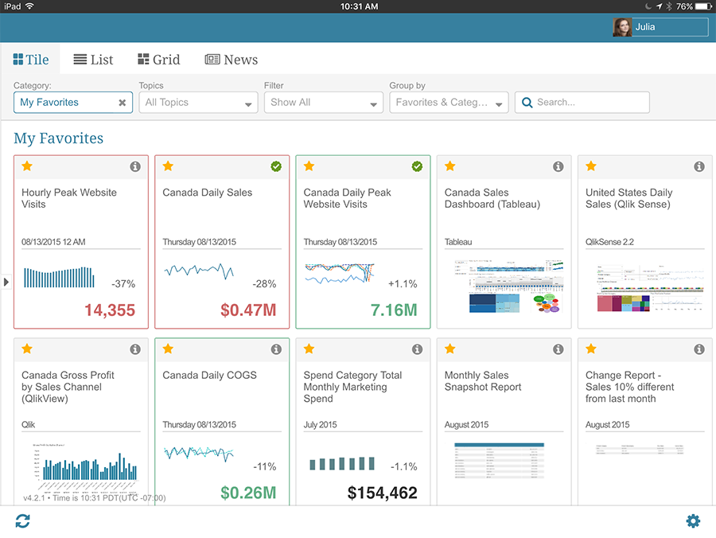
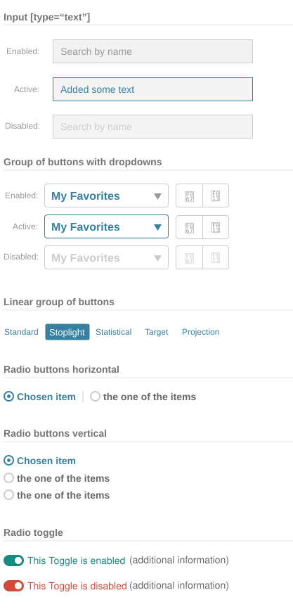
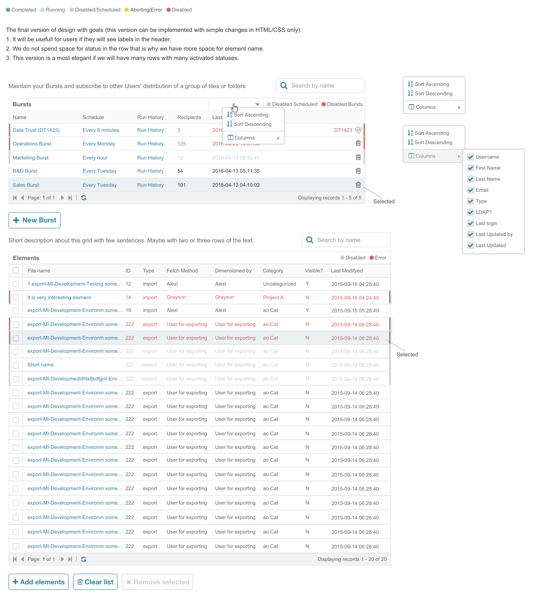
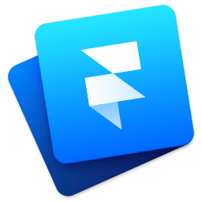

UI & UX DESIGN For Business Intelligence Tool
Full circle of Researches, Usability tests and Designs
for WEB, Native and Hybrid apps, with descridescribed
specifications for Scrum team.



Full circle of Researches, Usability tests and Designs
for WEB, Native and Hybrid apps, with descridescribed
specifications for Scrum team.

Based on prototypes, User testing and etc
designed, described & implemented via html & css with Bootstrap and ExtJS framworks


Design and prototyps for application where user can check alerts

FramerJS The clickable prototype for native part of Mobile App was made in FramerJS.features described and ready for export to Jira